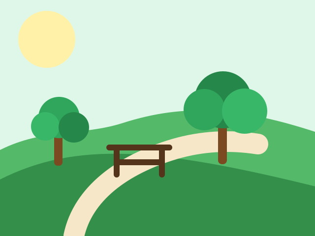
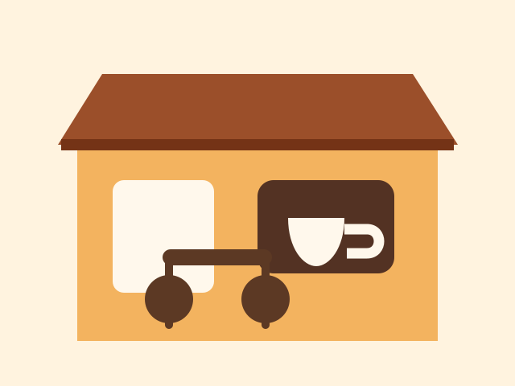
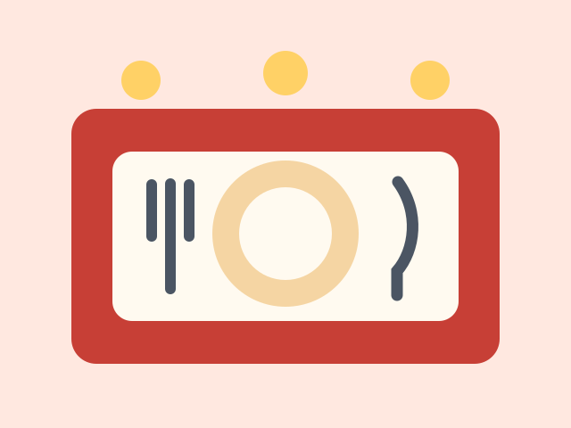
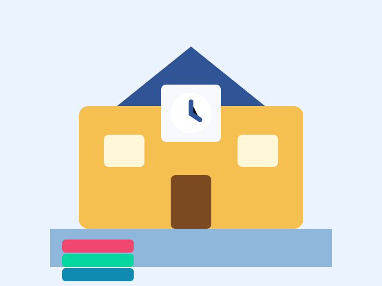
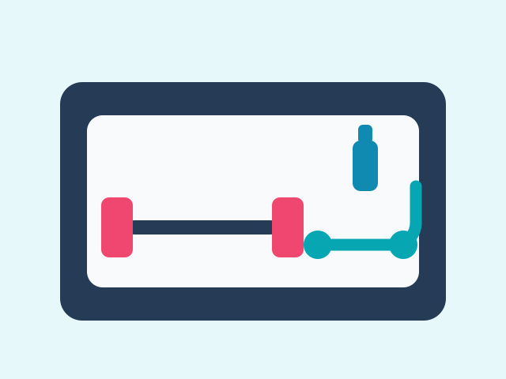
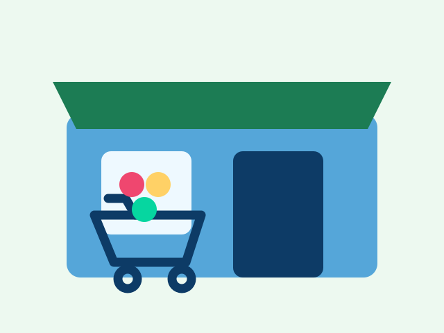
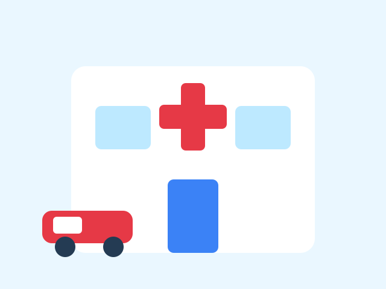
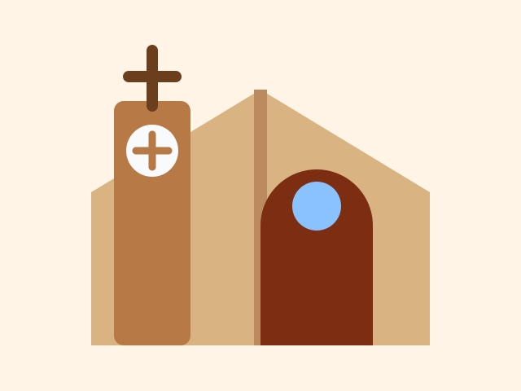
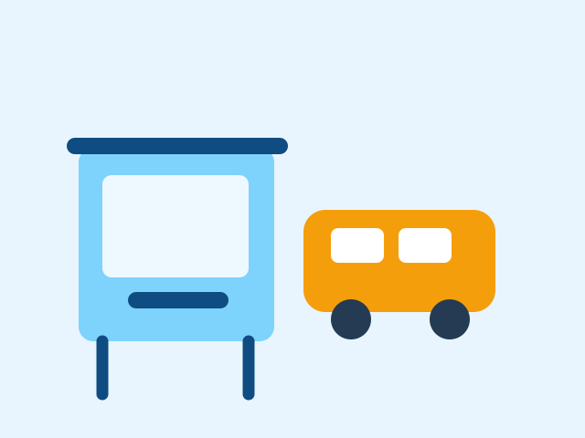
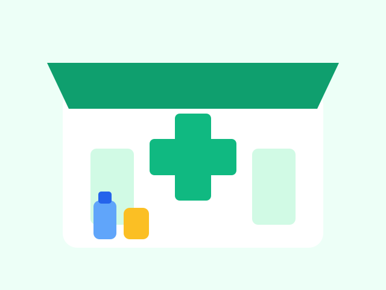

By the end of this unit, you will be able to describe places in a neighborhood, tell the time, and talk about favorite places in the city.
01
Learning route
What you will learn in Unit 6
Unit 6 connects your routines and free-time language with real places. You will describe your neighborhood, say what places exist, give simple times, and recommend favorite places in the city.
Study the places visually first. Click the listen button to hear the word with an American English browser voice, then repeat it aloud.

parkThere is a park.

cafeThere is a cafe.

restaurantThere is a restaurant.

schoolThere is a school.
libraryThere is a library.

gymThere is a gym.

supermarketThere is a supermarket.

hospitalThere is a hospital.
bankThere is a bank.

churchThere is a church.

bus stopThere is a bus stop.

pharmacyThere is a pharmacy.
03
Grammar
There is / There are
Use there is to say that one place exists. Use there are to say that two or more places exist.
Use
Affirmative
Negative
Question
One place
There is a park.
There isn't a park.
Is there a park?
Many places
There are two cafes.
There aren't two cafes.
Are there two cafes?
A lot
There are many restaurants.
There aren't many restaurants.
Are there many restaurants?
CorrectThere is a library near my house.
CorrectThere are three supermarkets downtown.
CarefulDo not say: There are a park. Say: There is a park.
There ___ a hospital near my house. Answer: is
There ___ two cafes in my neighborhood. Answer: are
There ___ many restaurants downtown. Answer: are
___ there a bus stop near the school? Answer: Is
04
Location and time
Where is it? What time do people go there?
After naming the place, add location and time. This helps your answer sound complete and useful.
Location words
near my houseThere is a pharmacy near my house.
next toThe library is next to the supermarket.
in front ofThere is a bus stop in front of the school.
downtownThere are many restaurants downtown.
Time expressions
What time is it?It is seven thirty.
at 8:00 a.m.The cafe opens at 8:00 a.m.
at 5:00 p.m.People go to the park at 5:00 p.m.
Let's...Let's have dinner at 8:00.
Park5:00 p.m.
Cafe8:00 a.m.
Library4:00 p.m.
Supermarket6:30 p.m.
Bus stop7:15 a.m.
05
City recommendations
Favorite Places in the City
Use adjectives to explain why a place is special. Start with one clear opinion and one reason.
Useful adjectives
quietThe library is quiet.
popularThe restaurant is popular.
safeThe park is safe.
beautifulThe city center is beautiful.
Recommendations
My favorite place is...My favorite place is the library.
The best cafe is...The best cafe is near the park.
The biggest park is...The biggest park is downtown.
Let's go...Let's go to the restaurant at eight.
Teacher's Tip
Start simple: There is a park. It is beautiful. I go there at 5:00. Then add one reason: I like it because it is quiet.
06
Model and final product
Describe your neighborhood
Read this model. Notice the places, grammar, time expressions, and adjectives.
My neighborhood is quiet and beautiful. There is a park near my house. There are two cafes and many small stores. My favorite place is the library because it is quiet. I go there at 4:00 p.m. after class. There is also a restaurant next to the park. It is popular. On Saturdays, I go there with my family. My neighborhood is small, but it is very nice.
07
Practice Connection
Move from explanation to practice
After studying this unit, use the memory game to learn vocabulary, complete the reading and listening, and then build your own neighborhood or city map.